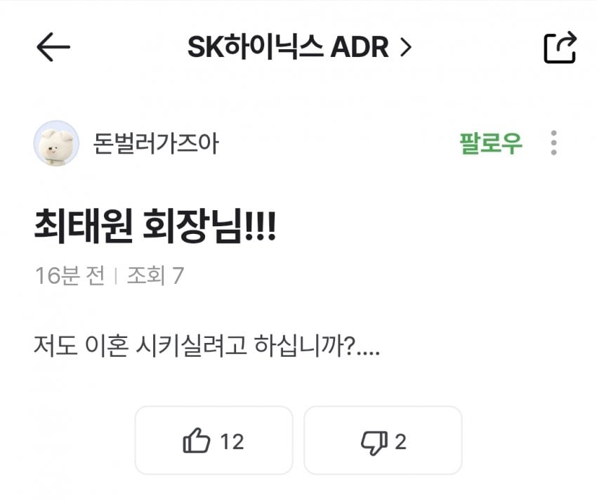

ㅋㅋㅋㅋ

ㅋㅋㅋㅋ


태~원

지금 주가 기준으로도 엄청 올려줬잖아
ㄹㅇ 하이닉스 500원 할때 안사고 이제와서 지랄
ㅅㅂ ㅋㅋㅋ ㅋ너어는 법무팀이 연락와도 그냥 ' 왔구나..' 해라 ㅋㅋㅋ
마누라까지 바꿨는데 뭐라도 하겠지
홀애비메이커
최태원은 홀애비아니라는게 더 문제지.
태-원은 스스로의 선택이야 ㅋㅋㅋㅋ
2조보단 싸잖아 견뎌 ㅋ
태~원
태~원

지금도 비쌈 더 떨어져야함
이혼하면 전재산 반토막나긴 하던데ㅋㅋㅋㅋㅋㅋㅋ
새장가 가니 조아쓰